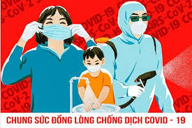
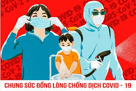

CỔNG THÔNG TIN CỦA BỘ Y TẾ VỀ ĐẠI DỊCH COVID-19
Đường dây nóng: 19009095
Cục Quản lý Dược, Bộ Y tế yêu cầu các đơn vị tuyệt đối không để xảy ra tình trạng khan hiếm, thiếu thuốc phục vụ khám, chữa bệnh cho nhân dân dịp Tết Nguyên đán Nhâm Dần, phòng chống dịch COVID-19 và dịch bệnh mùa Đông- Xuân; đảm bảo chất lượng và giá thành hợp lý, không để xảy ra tình trạng tăng giá đột biến...
Cục Quản lý Dược, Bộ Y tế vừa có văn bản gửi Sở Y tế các tỉnh, thành phố; Các bệnh viện, Viện trực thuộc Bộ; Các cơ sở sản xuất, nhập khẩu thuốc; Hội Dược học Việt Nam, Hiệp hội doanh nghiệp dược Việt Nam, Tổng Công ty Dược Việt Nam về việc đảm bảo cung ứng thuốc phòng chống dịch bệnh và nhu cầu sử dụng thuốc trong dịp Tết Nguyên đán Nhâm Dần 2022.
Tại văn bản này, Cục Quản lý Dược rêu rõ trước diễn biến hết sức phức tạp của dịch COVID-19 trong cả nước, đặc biệt đã ghi nhận các ca nhiễm biến chủng Omicron, thực hiện Chỉ thị số 01/CT- BYT của Bộ Y tế về việc tăng cường các biện pháp phòng, chống dịch bệnh và đảm bảo công tác y tế dịp Tết Nguyên đán 2022, để biến chủng Omicron đảm bảo đáp ứng đầy đủ nhu cầu thuốc chữa bệnh phục vụ nhân dân, đặc biệt trong công tác phòng, chống dịch COVID-19 và các dịch bệnh có thể xảy ra mùa Đông – Xuân cũng như thuốc phục vụ nhu cầu trong dịp tết nguyên đán Nhâm Dần 2022, Sở Y tế các tỉnh, thành phố cần chỉ đạo các bệnh viện, trung tâm kiểm soát bệnh tật trực thuộc Sở khẩn trương xây dựng kế hoạch và triển khai dự trữ thuốc để đảm bảo sẵn sàng cung ứng đủ thuốc.
Cục Quản lý Dược, Bộ Y tế yêu cầu các đơn vị tuyệt đối không để xảy ra tình trạng khan hiếm, thiếu thuốc phục vụ khám, chữa bệnh cho nhân dân dịp Tết Nguyên đán Nhâm Dần, phòng chống dịch COVID-19 và dịch bệnh mùa Đông- Xuân.
Tuyệt đối không để xảy ra tình trạng khan hiếm, thiếu thuốc phục vụ công tác khám, chữa bệnh cho nhân dân, đảm bảo chất lượng và giá thành hợp lý, không để xảy ra tình trạng tăng giá đột biến.
Chú trọng bảo đảm sẵn sàng cung ứng đủ thuốc phục vụ công tác cấp cứu; phòng chống dịch bệnh, đặc biệt là dịch COVID-19; thuốc phục vụ nhu cầu khám chữa bệnh trong dịp Tết Nguyên đán cũng như thuốc điều trị các bệnh thường xảy ra trong mùa đông – xuân như sốt xuất huyết, cúm A, tay chân miệng, sởi, rubella, tiêu chảy do virus Rota, các bệnh lây truyền qua đường hô hấp, tiêu hóa.
Sở Y tế các tỉnh, thành chỉ đạo các bệnh viện, các doanh nghiệp kinh doanh thuốc trên địa bàn triển khai kế hoạch dự trữ đầy đủ và tăng cường các biện pháp quản lý không để xảy ra tình trạng tăng giá đột biến vào dịp nghỉ lễ kéo dài và khi bùng phát dịch bệnh.
Chỉ đạo Thanh tra Sở Y tế phối hợp với các đơn vị liên quan tăng cường công tác thanh tra, kiểm tra việc thực hiện quy chế chuyên môn về dược và các quy định về sản xuất, kinh doanh, xuất nhập khẩu thuốc và mỹ phẩm đối với các cơ sở kinh doanh trên địa bàn. Đặc biệt chú trọng công tác phát hiện thuốc giả, thuốc kém chất lượng, thuốc không được phép lưu hành, găm hàng, tăng giá...và xử lý nghiêm các trường hợp được phát hiện.
Chỉ đạo các doanh nghiệp, nhà thuốc kinh doanh thuốc trên địa bàn tổ chức các địa điểm trực bán thuốc 24/24h và công bố thông tin rộng rãi trên các phương tiện thông tin đại chúng để kịp thời đáp ứng nhu cầu thuốc của người bệnh, không được đầu cơ, tăng giá thuốc trong dịp tết nguyên đán Nhâm Dần 2022.
Phân công cán bộ chuyên trách trực 24/24h trong các ngày nghỉ tết nguyên đán Nhâm Dần 2022 để theo dõi, nắm bắt tình hình và đảm bảo cung ứng thuốc trên địa bàn, báo cáo về Cục Quản lý Dược trước ngày 20/01/2021 để tăng cường công tác phối hợp.
Đối với các bệnh viện trực thuộc Bộ Y tế, Cục Quản lý Dược yêu cầu chủ động liên hệ với các cơ sở cung ứng thuốc để đặt hàng, theo dõi tiến độ giao hàng, khẩn trương thực hiện mua sắm bổ sung khi có nguy cơ thiếu thuốc hoặc giao hàng không kịp tiến độ, triển khai kế hoạch dự trữ thuốc đảm bảo sẵn sàng cung ứng thuốc, tuyệt đối không để xảy ra tình trạng thiếu thuốc phục vụ công tác khám, chữa bệnh cho nhân dân.
Đối với các cơ sở sản xuất, nhập khẩu, bán buôn, bán lẻ thuốc, Cục Quản lý Dược yêu cầu tăng cường nguồn cung, xây dựng và thực hiện kế hoạch cung ứng thuốc để phục vụ nhu cầu khám chữa bệnh của nhân dân, khẩn trương cung ứng đủ thuốc khi nhận đơn đặt hàng của các cơ sở khám, chữa bệnh, không được để xảy ra tình trạng đầu cơ, không lợi dụng dịp tết để tăng giá thuốc.
 


Theo Bộ trưởng Bộ Y tế Nguyễn Thanh Long, tiêm vaccine phòng COVID-19...
Địa chỉ: Số 138A Giảng Võ - Quận Ba Đình - TP. Hà Nội
Email: covid19@suckhoedoisong.vn